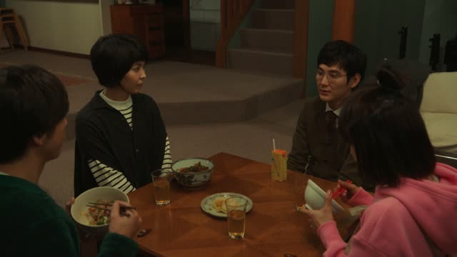
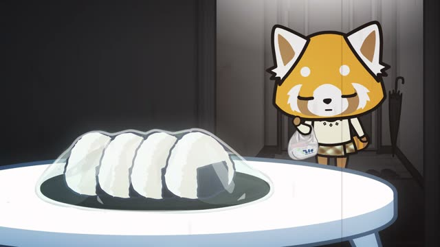
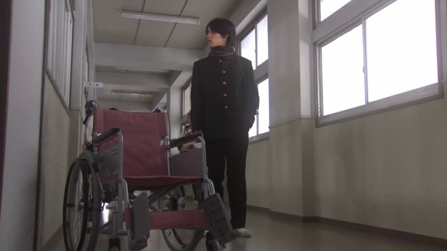

～て (And then)

Shirokuma Cafe · Episode 2
朝起きて一番に、中庭に集まって、家族みんなで太極拳をします。
"First thing after we get up, we gather in the courtyard and the whole family does tai chi." [Panda talking about home]
て joins actions in the order they happen: get up, gather, do tai chi.
Put each verb in the て-form and keep going: 起きる → 起きて, 集まる → 集まって. Only the last verb shows the tense and the politeness, here します.
So you never need ます in the middle. To make it casual, change only the end: する instead of します.
Dungeon Meshi · Episode 17
そして飯食って 風呂入って寝ろ！
"Then eat, take a bath and go to bed!"
The て-form links actions in order, and only the last verb shows the form. On this card, 食う → 食って, 入る → 入って, then 寝ろ ("sleep!") at the end.
Quick Examples
Your friend asks about your evening.
家に帰って、シャワーを浴びて、寝ました。
"I went home, showered and went to bed."
Past only at the end: 寝ました. The て verbs are past too.
PoliteTelling a friend your plan for Sunday.
渋谷に行って、映画を見る。
"I'll go to Shibuya and watch a movie."
行く → 行って (the odd one).
CasualExplaining the way to the station.
まっすぐ行って、二つ目の角を右に曲がってください。
"Go straight, then turn right at the second corner."
The last verb has てください, so the whole thing is a request.
PoliteCooking with a friend.
玉ねぎを切って、炒めて。
"Cut the onion and fry it."
切る → 切って. 炒める → 炒めて.
CasualWith and without
家に帰ります。ご飯を食べます。
"I go home. I eat." Two separate sentences.
家に帰って、ご飯を食べます。
"I go home and eat." One sentence, one action after the other.
Examples from Media

YouTube · video
ハンバーガーバンズを取って、これも床に置きます。
"I take the burger buns and put them on the floor too."
取る → 取って.

Quartet · Episode 2
ソファ借りて 寝てるだけなんです。
"I'm just borrowing the sofa and sleeping on it."
借りて + 寝てる: only the end is polite.

Sailor Suit and Machine Gun · Episode 4
明日 武さんに会って 話してきます。
"Tomorrow I'll meet Take-san and talk to him."
会う ("meet") → 会って + 話してきます ("go and talk") = "meet him and talk".

Shirokuma Cafe · Episode 5
パンダくんに聞いて作ってみました。
"I asked Panda, then tried making it."
First one thing, then the next.

Aggretsuko · Season 2, Episode 1
しばらく時間つぶして 帰ったら。
"I killed some time, and when I got home..."
Dungeon Meshi · Episode 12
任せて やってみる。
"Leave it to me, I'll try."

1 Litre of Tears · Episode 7
結構頑張って 作ったんだ。
"I worked pretty hard and made it."
1 Litre of Tears · Episode 10
時間を決めて 行けばいいんじゃない？
"Why not pick a time and go?"
Further Reading
A Dictionary of Basic Japanese Grammar
Entry "-te" · pp. 464–467
Tae Kim's Guide to Japanese Grammar
Compound Sentences · A sequence of verbs with the te-form